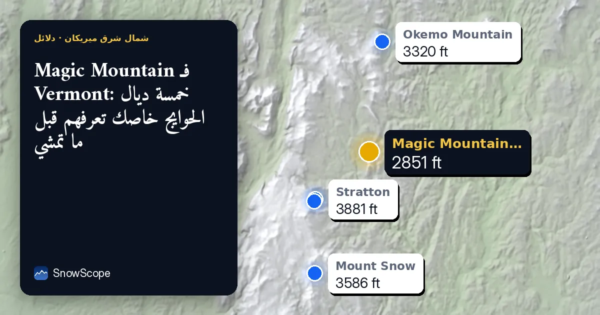

Magic Mountain فـ Vermont: خمسة ديال الحوايج خاصك تعرفهم قبل ما تمشي
Magic Mountain هي المحطة اللي الناس كيتحدثو عليها بحب وليس بالأرقام: مستقلة، حادة بما فيه الكفاية، وفخورة بيها. كتجلس فلندندري، فجنوب فرمونت.
شوف توقعات التلج مباشرة ديال Magic Mountain Ski Area فالتطبيق ديال SnowScopeالعلو ديال التلج، التنبيهات والخريطة 3D، فابور.
1. التلج الطبيعي هنا رقيق، شي فاللي تبع العواصف
جنوب فرمونت ليست منطقة التلج العميق. فقمة الجبل، 2,851 قدم (869 م)، القمة العادية ديال الموسم هي فقط حوالي 26 بوصة (67 سم)، وفالقاعدة، 1,378 قدم (420 م)، حوالي 21 بوصة (54 سم). الشتوات كتتغيير بشكل واسع: الأرق فالسجل ديالنا وصلت إلى حوالي 6 بوصات (14 سم)، الأعمق قرب القمة حوالي 46 بوصة (116 سم). صنع التلج كيغطي حوالي نص التضاريس، شي البيستات المحروسة كتشتغل أكثر من هاد الأرقام؛ للأشجار، أنت خاصك التلج الطبيعي.
الخطة الأحسن هي تروح فالأيام اللي بعد عاصفة قوية. الوقت هاد أهم فMagic Mountain من المحطات الكبيرة اللي عندها مدافع تلج أكثر والتضاريس أكثر. كيما التلج الطبيعي كيوقع، كيخلي الفرق بين يوم كويس ويوم زوين، خاصة فالأشجار حيث التلج كيبقى أطول فالظل.

2. البيستات الحادة بالأشجار هي القضية
Magic Mountain عندها الشبكة الأكثر شمولاً ديال التزلج بين الأشجار فجنوب فرمونت، مع انحدارات وصلات إلى 45 درجة، على انخفاض عمودي حوالي 1,500 قدم من القاعدة ب 1,350 قدم إلى القمة ب 2,850 قدم. كايين 39 بيست على 205 فدّان. بالنسبة للمتزلجين الواثقين هاد هي الجاذبية؛ بالنسبة للمبتدئين، كايين أقل هنا من المحطات الكبيرة القريبة، شي اختار الدروس والبيستات السهلة بحرص.
البيستات بالأشجار كتعطيك حماية من الريح والتلج الطري اللي كيبقى أطول فالربيع. فالأيام التلج الرقيق، البيستات المفتوحة كتكون مكشوطة قويا، بس الأشجار كتبقى نقايع. هاد الحيت هو سبب اللي المتزلجين الخبرا كيرجعو باستمرار.
3. دجنبر فيه خطر؛ فبراير ومارس هما الأحسن
قرب القمة شتاء عادي فيه حوالي 6 بوصات (14 سم) فدجنبر، 11 بوصة (28 سم) فيناير وحوالي 17 بوصة (43 سم) ففبراير، بعد حوالي 17 بوصة (42 سم) فمارس. رحلات دجنبر كتعتمد على صنع التلج والليالي الباردة؛ كايين شنو القليل إذا الجو تدفاو. فالقاعدة، الأرقام حتى أضيق: فقط 1 بوصة (1 سم) عادية فنونبر، 2 إلى 11 بوصة (2 إلى 11 سم) فدجنبر.
فبراير وبداية مارس كيعطيو الأشجار أحسن فرصة. أحسن أسبوع واحد فالسجل ديالنا، فبداية مارس، فيه على الأقل 20 بوصة (50 سم) فالقمة فنص الشتوات جميع. فأخر الشتاء، القاعدة عندها 2 إلى 31 بوصة (2 إلى 31 سم) كتراكمت، والقمة عادة كتجلس فوق 50 بوصة (127 سم). هاد هو الوقت اللي خاص تحجز فيه رحلتك.
4. اركب Red Chair مرة على الأقل
Red Chair هي تليفيريك مزدوج ثابت كتبنات سنة 1971، بطيء وشوية بارد، وجزء من هوية الجبل. من سنة 2020 Black Line Quad كتعطي طريقة ثانية للطلوع. فيوم بارد وفيه ريح، لبس شيء دافي للركوب الطويل: تغطية الوجه والقفازات الدافية كتخلق فرق كبير.
الريح كتهم أكثر من الحرارة فجانب الجبل المفتوح. سكارف أو بالاكلافا والخوذة اللي كتغطي الأذنين كتحمي الجلد ديالك. شيب مدفئات كيمياوية وقفازات احتياطية فرُكساك صغير؛ القفازات المبلولة كتجمد على التليفيريك، وزوج جاف فالغدا كيخلي بعد الظهر ممكن.
5. التلج هنا بقا ثابت
مدرب التزلج السويسري والمصور Hans Thorner كسس المحطة لأن التضاريس كتفكرو بالألب فالبيت ديالو. الجبل قفل سنة 1991، فتح مرة ثانية سنة 1997، وكاتعاني من عديد المالكين قبل ما Ski Magic LLC تفتحو مرة ثانية فأخر دجنبر 2016. الجبال الصغيرة بحال هاد كتعيش على المتزلجين الديما ديالها والتضاريس الحادة.
فالسجل ديالنا التلج ديالها ما نقص. متوسط القمة قرب القمة كان حوالي 21 بوصة (54 سم) فأول خمستاش شتاء ديالنا وحوالي 25 بوصة (63 سم) فآخر خمستاش. الشتاء اللي فات، 2025-26، كان حوالي عادي ب 26 بوصة (66 سم). الثبات هاد نادر فجنوب نيو إنجلاند وكيتحدث على موقع الجبل فجبال غرين.
شنو اللي خاص تشيب فMagic Mountain
طبقات قاعدية رقيقة وسريعة الجفاف (صوف أو اصطناعي، ولا قطن) كتخليك جاف وسط النهار والتنظيم ديال الحرارة على التليفيريك. طبقة دافية وسيطة وجاكيت ضد الريح كتترك الحرارة وكتحمي من الريح اللي تهم أكثر من الحرارة. الطبقات كتخليك تفتح على الجري الطويل وتقفل مرة ثانية على الكرسي.
جيب نضارات مع عدسة للضوء الضعيف؛ الأيام الغيم شائعة ففرمونت. عدسة ثانية أو نضارات شمسية كتساعد فأيام الربيع المضاء. الحد من الأطراف ديالك قبل الرحلة، أو اكري تزلج اللي كتن مخدومة مؤخراً. مع تكويم التلج الأرق، الذوبان والتجميد كيحولو السطح قاسي بسرعة، والأطراف الحادة كتخلي الفرق بين التحكم والانزلاق.
نصايح للي كيتزلجو
- روح فالأيام اللي بعد عاصفة قوية، خاصة بالنسبة للأشجار. التلج الطبيعي هنا رقيق وكيذوب بسرعة.
- احجز رحلتك ففبراير أو بداية مارس. دجنبر كتعتمد على صنع التلج؛ آخر الشتاء كيعطي الأشجار أحسن فرصة.
- البس على طبقات وجيب تغطية الوجه والقفازات الدافية والمدفئات الكيمياوية. الريح على Red Chair كتكون قوية.
- جيب نضارات للضوء الضعيف وعدسة ثانية بالنسبة للأيام المضاء. سطح التلج كيتقسى بسرعة كيما يكون رقيق.
- شوف النشرة ديال الانهيارات الرسمية على avalanche.org قبل ما تروح خارج البيستات، واتأكد أن المحطة مفتوحة فاليوم اللي كتخطط تروح فيه.
على هاد الأرقام
العلو ديال التلج فالمحطات هو أكثر تلج فالجهة الفوقانية فالتاريخ المكتوب؛ هادو تقديرات لمنطقة، ماشي قياس فنقطة وحدة. التوقعات يمكن تتبدل. ديما شوف النشرة الرسمية ديال الانهيارات قبل ما تخرج من البيست.
النشرات الرسمية ديال الانهيارات: avalanche.org (US national portal)
كيفاش تستاشهد بهاد المقال
للبحث، التعليم ولا الصحافة: الأرقام والرسومات تقدر تعاود تخدم بيهم بحرية تحت CC BY 4.0 مع هاد الاستشهاد.
SnowScope (2026), Magic Mountain فـ Vermont: خمسة ديال الحوايج خاصك تعرفهم قبل ما تمشي, https://snowscope.app/blog/ar/2026/11/magic-mountain-vermont-five-things-before-you-go.html, تشاف ف 2026-11-09
SnowScope (Atlas Labs). (2026, November 9). Magic Mountain فـ Vermont: خمسة ديال الحوايج خاصك تعرفهم قبل ما تمشي. SnowScope snow reports. https://snowscope.app/blog/ar/2026/11/magic-mountain-vermont-five-things-before-you-go.html
BibTeX
@misc{snowscope2026magicmountainvermontfive,
author = {{SnowScope (Atlas Labs)}},
title = {Magic Mountain فـ Vermont: خمسة ديال الحوايج خاصك تعرفهم قبل ما تمشي},
year = {2026},
month = nov,
howpublished = {\url{https://snowscope.app/blog/ar/2026/11/magic-mountain-vermont-five-things-before-you-go.html}},
note = {Published 2026-11-09 16:24 UTC; accessed 2026-11-09}
}· CC BY 4.0 · الطريقة، الداتا والأدوات →
Magic Mountain Ski Area: التلج والحرارة حسب العلو، هاد الشتا مقارنة مع اللي فاتت (الأدوات) →
تابع Magic Mountain Ski Area
فابور: ميساج ملي يجي التلج، والتوقعات كل صباح.